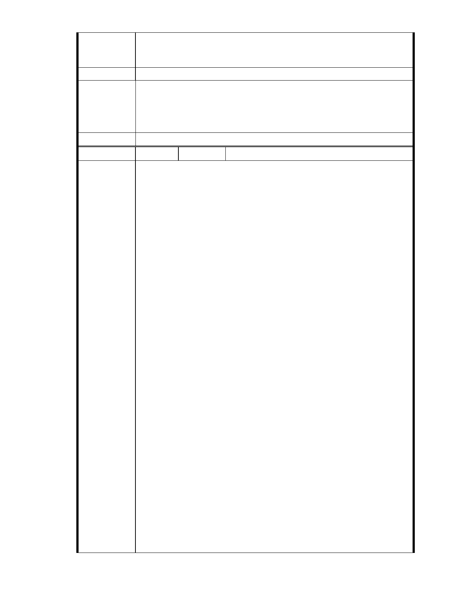

建議辦法
關學說名詞與理論。另本人亦為慈濟長年捐款人，每年省下不必要
的花費樂捐慈濟，希望慈濟能循正規申請，切勿閃躲必要法令程序，
徒增大眾誤解與社會負面觀感。
市府說明
一、本案申請範圍內土地已於慈濟購買前悉數破壞填平，已無保護區之
功能，常年維持現況無利於地區形象及生活品質，本案申請方案將
改善地區滯洪排水情形，強化大湖地區都市排水功能。
二、本案依法接受個案申請，後續將依法定程序進行審查。
委 員 會 決 議 同編號 1。
編號
陳情理由
105 陳情人 孫文郁、陳乃立、
主旨；有關「變更臺北市內湖區成功路五段大湖公園北側部分保護區及
道路用地為社會福利特定專用區主要計畫案」暨「擬訂臺北市內
湖區成功路五段大湖公園北側社會福利特定專用區細部計畫
案」，本人依據依據大湖里『公民投票』結果，以及「反對慈濟將
內湖保護區變更開發」連署活動，提出反對變更保護區陳情意見，
敬請查照。
說明：
一、依據都市計畫法第 19 條第 1 項規定提出人民陳情意見。
二、依據民國 87 年 11 月 27 日慈濟內湖園區(台北市內湖區大湖段 120、
133、144、145 等四筆)山坡地保護區溜地目(面積 31851 ㎡) 大湖
里、秀湖里『公民投票』結果：「有 91%(4801 選舉人票)贊成闢建水
保公園、7%(394 選舉人票) 反對闢建水保公園、2% (108 選舉人票)
廢票」之結果，建議本案應變更為水保公園，反對變更為社會福利
設施。
三、依據「台灣連署資源運籌平台」
(http://campaign.tw-npo.org/sign.php?id=2010102608195900)
「反對慈濟將內湖保護區變更開發」連署活動，訴求：
1、我們反對慈濟內湖開發案將保護區變更為社會福利專用特定區。
2、極端氣候越趨劇烈的今天，我們不要變成下一個小林村、蘇澳或是蘇
花公路，我們不要當年淹水的陰霾重回我們心中。市政府有責任保
障居民免於活在擔心淹水吞噬身家財產的恐懼之中。
3、我們希望慈濟可以「在對的地方，做對的事情」，慈濟應另覓開發基
地。政府可以結合「閒置空間再利用」等方式，以成長管理的精神，
引導慈濟避開環境敏感地區，而另在更適當的地點進行開發。
4、呼籲市政府不要因為是慈濟，就違背台北市對保護區該有的態度。正
因為慈濟是公益團體的模範生，我們更應該用嚴格的標準來檢視
它，以共同協助慈濟往更好的方向成長發展，而不是姑息他錯誤的
行為。要協助慈濟為台灣的國土保育、環境保護樹立典範！
5、依據 1998 年大湖里里民的公投結果，與 貴委員會歷年來多為委員的
意見，我們建議慈濟將內湖保護區規劃為「水土保育示範園區」，進
行國土復育與保育的工作，教育民眾認識環境保育的重要，從根本
上去避免災害發生的源頭，進一步能預防解救更多天下蒼生於天災
人禍的不幸。
目前連署團體數：53 個，目前連署人數：5006 人，合計目前連署個數：
- 91 -